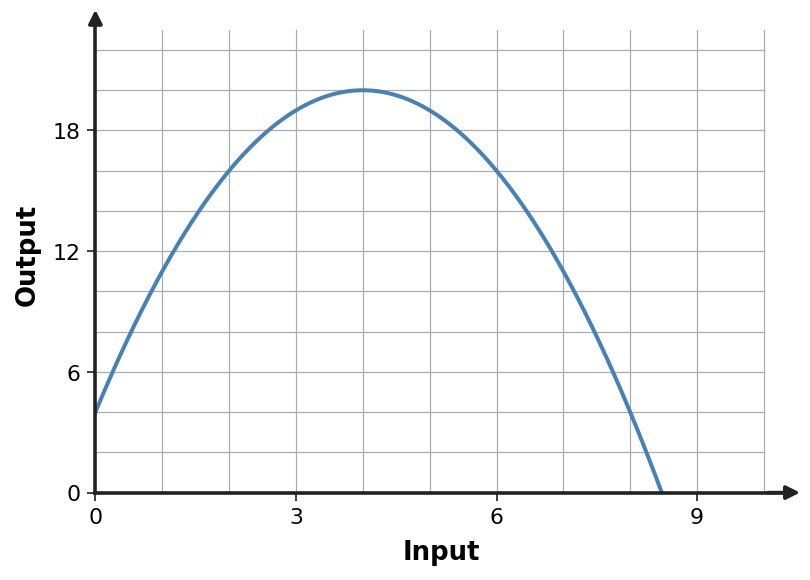

A quadratic has zeros $0$ and $9$ and passes through $(1,-8)$. Construct a factored model.
A quadratic has zeros $0$ and $9$ and passes through $(1,-8)$. Construct a factored model.
$y=x(x-9)$.
A quadratic has zeros $1$ and $8$ and passes through $(0,-8)$. Construct a factored model.
A quadratic has zeros $1$ and $8$ and passes through $(0,-8)$. Construct a factored model.
$y=-(x-1)(x-8)$.
A quadratic has zeros $2$ and $7$ and passes through $(0,14)$. Construct a factored model.
A quadratic has zeros $2$ and $7$ and passes through $(0,14)$. Construct a factored model.
$y=(x-2)(x-7)$.
A quadratic has zeros $3$ and $6$ and passes through $(0,-18)$. Construct a factored model.
A quadratic has zeros $3$ and $6$ and passes through $(0,-18)$. Construct a factored model.
$y=-(x-3)(x-6)$.
A parabola has vertex $(1,25)$ and passes through $(3,21)$. Construct a vertex-form model.
A parabola has vertex $(1,25)$ and passes through $(3,21)$. Construct a vertex-form model.
$y=-(x-1)^2+25$.
A parabola has vertex $(2,26)$ and passes through $(4,34)$. Construct a vertex-form model.
A parabola has vertex $(2,26)$ and passes through $(4,34)$. Construct a vertex-form model.
$y=2(x-2)^2+26$.
A parabola has vertex $(3,27)$ and passes through $(5,23)$. Construct a vertex-form model.
A parabola has vertex $(3,27)$ and passes through $(5,23)$. Construct a vertex-form model.
$y=-(x-3)^2+27$.
A parabola has vertex $(4,28)$ and passes through $(6,36)$. Construct a vertex-form model.
A parabola has vertex $(4,28)$ and passes through $(6,36)$. Construct a vertex-form model.
$y=2(x-4)^2+28$.
For $f(x)=-2(x-2)^2+67$, state the maximum value and the input where it occurs.
For $f(x)=-2(x-2)^2+67$, state the maximum value and the input where it occurs.
Maximum $67$ at $x=2$.
For $f(x)=-2(x-3)^2+70$, state the maximum value and the input where it occurs.
For $f(x)=-2(x-3)^2+70$, state the maximum value and the input where it occurs.
Maximum $70$ at $x=3$.
For $f(x)=-2(x-4)^2+73$, state the maximum value and the input where it occurs.
For $f(x)=-2(x-4)^2+73$, state the maximum value and the input where it occurs.
Maximum $73$ at $x=4$.
For $f(x)=-2(x-5)^2+76$, state the maximum value and the input where it occurs.
For $f(x)=-2(x-5)^2+76$, state the maximum value and the input where it occurs.
Maximum $76$ at $x=5$.
Use the graph to estimate the maximum point and any visible nonnegative intercepts.

Use the graph to estimate the maximum point and any visible nonnegative intercepts.
Maximum at about $(4,20)$. Intercepts occur where the curve meets the horizontal axis; solve $-(x-4)^2+20=0$ for exact values if needed.
Use the table to identify the vertex and write a vertex-form model.
| $x$ | $y$ |
|---|---|
| $0$ | $7$ |
| $1$ | $10$ |
| $2$ | $11$ |
| $3$ | $10$ |
| $4$ | $7$ |
Use the table to identify the vertex and write a vertex-form model.
| $x$ | $y$ |
|---|---|
| $0$ | $7$ |
| $1$ | $10$ |
| $2$ | $11$ |
| $3$ | $10$ |
| $4$ | $7$ |
Vertex $(2,11)$; $y=-(x-2)^2+11$.
A rectangle has perimeter 34 m. Let one side be $x$. Write a quadratic area model and determine the maximum area.
A rectangle has perimeter 34 m. Let one side be $x$. Write a quadratic area model and determine the maximum area.
Other side $17-x$. Area $A=x(17-x)$; maximum occurs at a square with side $8.5$ m and area $72.25$ m².
A quadratic model has algebraic solutions $x=-3$ and $x=7$, but the context restricts $0\le x\le 11$. Which solution should be reported and why?
A quadratic model has algebraic solutions $x=-3$ and $x=7$, but the context restricts $0\le x\le 11$. Which solution should be reported and why?
Report $x=7$ because $x=-3$ lies outside the modeled domain.
Factor $x^2+9x+20$.
Factor $x^2+9x+20$.
$(x+4)(x+5)$.
Factor $x^2+x-30$.
Factor $x^2+x-30$.
$(x+6)(x-5)$.
Find two integers with product $-18$ and sum $3$. Use them to factor $x^2+3x-18$.
Find two integers with product $-18$ and sum $3$. Use them to factor $x^2+3x-18$.
The integers are 6 and -3; $(x+6)(x-3)$.
Predict the missing constant so $x^2+10x+\square$ factors as $(x+4)(x+6)$.
Predict the missing constant so $x^2+10x+\square$ factors as $(x+4)(x+6)$.
$24$.
Describe the transformations from $y=x^2$ to $y=-3(x-3)^2+2$.
Describe the transformations from $y=x^2$ to $y=-3(x-3)^2+2$.
Right 3, vertical stretch by factor 3, reflect across the $x$-axis, and up 2.
Apply $(x,y)\to(x+2,-3y)$ to the point $(2,3)$.
Apply $(x,y)\to(x+2,-3y)$ to the point $(2,3)$.
$(4,-9)$.
Do $y=3(x+2)^2-4$ and the point set obtained by shifting parent points left 2, stretching outputs by 3, then down 4 describe the same transformation? Explain.
Do $y=3(x+2)^2-4$ and the point set obtained by shifting parent points left 2, stretching outputs by 3, then down 4 describe the same transformation? Explain.
Yes. The equation encodes exactly those transformations.
Write an equation for $y=|x|$ reflected over the $x$-axis, vertically stretched by 3, shifted right 2, and shifted up 2.
Write an equation for $y=|x|$ reflected over the $x$-axis, vertically stretched by 3, shifted right 2, and shifted up 2.
$y=-3|x-2|+2$.